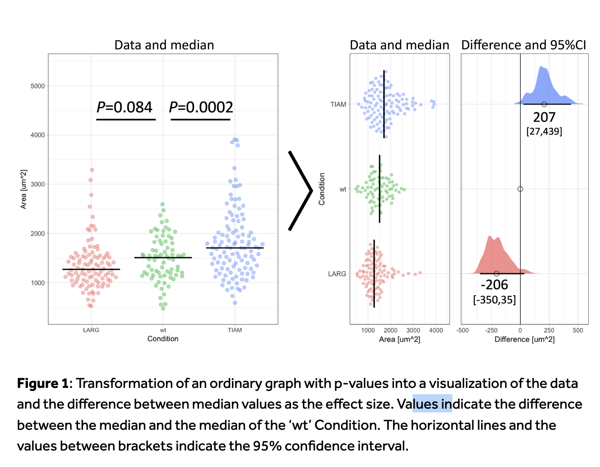

September 2024
A metric that quantifies the direction and magnitude of an experimental/observational effect:
Extracted directly from publications or calculated from reported data
Standardized to be comparable across multiple primary studies
Reliable: effectively represent the underlying data (e.g., be careful of ratios with low denominators)
Statistical vs. Practical Significance
Small effect sizes can produce significant p-values with large samples but have little real-world impact.
Impact of Sample Size
Large datasets make even tiny effects statistically significant, risking misinterpretation.
Criticisms of p-values
see e.g., Hasley, 2019; Chen et al., 2023). Complement with confidence intervals or Bayesian approaches.
 In Goedart, 2018
Effect sizes are typically represented by the Greek letter theta (θ):
\(𝜃ₖ\): the ‘true’ (unknown) effect size of study k
\(\hat{𝜃ₖ}\) : the observed (estimated) effect size from data in study k
The observed effect size deviates from the true effect size due to sampling error:
\(𝜃ₖ\) ≠ \(\hat{𝜃ₖ}\) because \(𝜃ₖ\) = \(\hat{𝜃ₖ}\)+ \(𝜀ₖ\) (where \(𝜀ₖ\) is the sampling error)
Reduce sampling error to produce accurate estimates that are as close as possible to the true effect size.
Unknown parameters:
What we do:
==> \(\hat{𝜃ₖ}\) ̂ : Estimated through the mean value (of a sampling distribution)
==> εₖ : Estimated through the standard error (SE).
(standard error of the mean : 𝑆𝐸= 𝑠/√𝑛 ; with n: sample size, s: standard dev)
Imagine we know the true mean (μ) and standard deviation (σ) of a distribution perfectly.
e.g.
mu <- 100 # True mean
sigma <- 15 # True standard deviation
#| standalone: true
#| viewerHeight: 600
# Load necessary libraries
library(shiny)
library(ggplot2)
library(plotly)
# Define UI for the application
ui <- fluidPage(
titlePanel("Effect of Sample Size on Parameter Estimation"),
sidebarLayout(
sidebarPanel(
sliderInput("sampleSize",
"Select Sample Size:",
min = 5,
max = 500,
value = 50,
step = 5)
),
mainPanel(
plotlyOutput("densityPlot")
)
)
)
# Define server logic for the plot
server <- function(input, output) {
output$densityPlot <- renderPlotly({
# Set parameters
mu <- 100 # True mean
sigma <- 15 # True standard deviation
# Generate sample based on slider input
sample_size <- input$sampleSize
sample_data <- rnorm(sample_size, mean = mu, sd = sigma)
# Create data frame for plotting
df <- data.frame(value = sample_data)
# Plot density
p <- ggplot(df, aes(x = value)) +
geom_density(fill = "blue", alpha = 0.5) +
geom_vline(aes(xintercept = mu), color = "red", linetype = "dashed", size = 1) +
labs(title = paste("Sample Size:", sample_size),
x = "Value",
y = "Density") +
theme_minimal()
ggplotly(p)
})
}
# Run the application
shinyApp(ui = ui, server = server)
Depending on your experimental design, research question, and the type of outcome you are interested in, various effect sizes can be applicable.
| Effect Type | Description |
|---|---|
| Cohen’s d | Effect size between two means. |
| Hedges’ g | Corrected Cohen’s d for small samples. |
| Correlation (r) | Strength and direction of a linear relationship. |
| Eta-squared ((^2)) | Proportion of variance explained in ANOVA. |
| Partial Eta-squared | Proportion of variance explained by an effect, controlling others. |
| Effect Type | Description |
|---|---|
| Odds Ratio (OR) | Measures the strength of association between two events. |
| Risk Ratio (RR) | Compares the risk of an event between two groups. |
| Phi Coefficient | Measures the association between two binary variables. |
\[MD = M_1 - M_2 \] with M1: Mean of group 1 - M2: Mean of group 2
\[SE_{MD} = SD_{pooled}\sqrt{\frac{1}{n_1} + \frac{1}{n_2}}\] With- SD1 : Standard deviation of group 1 - SD2 : Standard deviation of group 2 - n1 , n_2 : Sample sizes
\[SD_{pooled} = \sqrt{\frac{(n_1 - 1) \cdot SD_1^2 + (n_2 - 1) \cdot SD_2^2}{n_1 + n_2 - 2}}\]
| Variable | Soil A | Soil B |
|---|---|---|
| Mean Height ((M)) | 25 cm | 20 cm |
| Standard Deviation ((SD)) | 4 cm | 5 cm |
| Sample Size ((n)) | 30 | 30 |
Mean Difference: \[ MD = 25 - 20 = 5 \text{ cm} \]
Pooled Standard Deviation:
\[ SE_{MD} = \sqrt{\frac{(30 - 1) \cdot 4^2 + (30 - 1) \cdot 5^2}{30 + 30 - 2}} \cdot \sqrt{\frac{1}{30} + \frac{1}{30} } = 1.18 \]
\[ d = \frac{M_1 - M_2}{S_{within}} \]
\[ S_{within} = \sqrt{\frac{(n_1 - 1)S_1^2 + (n_2 - 1)S_2^2}{n_1 + n_2 - 2}} \]
Where: - M_1 and M_2 represent the sample means of the two groups. S_{within}, is the pooled within-groups standard deviation: - n_1 and n_2 are the sample sizes of the two groups, - S_1 and S_2 are the standard deviations of the two groups.
\[ SE_d = \sqrt{\frac{n_1 + n_2}{n_1 n_2} + \frac{d^2}{2(n_1 + n_2)}} \]
\[ g = d \times \left(1 - \frac{3}{4N - 1}\right) \] - (N): Total sample size ( (N = n_1 + n_2) )
\[ SE_g = \sqrt{J^2\times SE_d^2} \]
| Variable | Soil A | Soil B |
|---|---|---|
| Mean Height ((M)) | 25 cm | 20 cm |
| Standard Deviation ((SD)) | 4 cm | 5 cm |
| Sample Size ((n)) | 30 | 30 |
Cohen’s (d): \[ d = \frac{5}{4.58} \approx 1.09 \]
Hedges’ (g): \[ g = 1.09 \times \left(1 - \frac{3}{4(60) - 1}\right) \approx 1.08 \]
\[R = \frac{X_1}{X_2} \]
where: - \(SD_{\text{pooled}}\): Pooled standard deviation - \(X_1\): Mean of group 1 - \(X_2\): Mean of group 2 - \(n_1, n_2\): Sample sizes of the two groups
\[\log R = \ln\left(\frac{X_1}{X_2}\right)\] Log transformation is often used to stabilize variance and normalize the distribution.
\[ SE_{\ln R} = SD_{\text{pooled}} \sqrt{ \left( \frac{1}{n_1 \cdot (X_1)^2} \right) + \left( \frac{1}{n_2 \cdot (X_2)^2} \right) } \]
where: - \(SE_{\ln R}\): Standard error of the log response ratio - \(SD_{\text{pooled}}\): Pooled standard deviation - \(X_1\): Mean of group 1 - \(X_2\): Mean of group 2 - \(n_1, n_2\): Sample sizes of the two groups
\[ \text{LnR}_{corr} = \ln\left(\frac{X_1}{X_2}\right) - \frac{1}{2} \cdot \left(\frac{SD_{X1}^2}{n_1 X_1^2} + \frac{SD_{X2}^2}{n_2 X_2^2}\right) \]
Where:
- ( X_1, X_2 ): Group means.
- ( SD_{X1}, SD_{X2} ): Standard deviations.
- ( n_1, n_2 ): Sample sizes.
References: Lajeunesse, M. J. (2011)
| Variable | Soil A | Soil B |
|---|---|---|
| Mean Plant Height (X) | 25 cm | 20 cm |
| Standard Deviation (SD) | 4 cm | 5 cm |
| Sample Size (n) | 30 | 30 |
\[ R = \frac{25}{20} = 1.25 \] and \[\log R = \ln(1.25) \approx 0.223\]
\[ SE_{\ln R} = 4.53 \cdot \sqrt{ \left( \frac{1}{30 \cdot 25^2} \right) + \left( \frac{1}{30 \cdot 20^2} \right) } \approx 0.053 \]
\[ r = \frac{Cov(X, Y)}{SD_X \cdot SD_Y} \]
Where: - ( Cov(X, Y) ): Covariance between variables ( X ) and ( Y ) - ( SD_X ): Standard deviation of variable ( X ) - ( SD_Y ): Standard deviation of variable ( Y )
\[ SE_r = \frac{1 - r^2}{\sqrt{n - 2}} \]
Where: - n: Sample size
#| standalone: true
#| viewerHeight: 600
library(shiny)
library(ggplot2)
library(plotly)
# Fonction pour générer des données avec une corrélation spécifiée
generate_data <- function(n, correlation_target) {
correlations <- replicate(n, {
x <- rnorm(20, mean = 10, sd = 1) # Variable indépendante
y <- correlation_target * x + rnorm(20, mean = 0, sd = sqrt(1 - correlation_target^2)) # Variable dépendante
cor(x, y) # Calcul de la corrélation
})
return(data.frame(Iteration = 1:n, Correlation = correlations))
}
# Transformation de Fisher
fisherz <- function(r) {
return(0.5 * log((1 + r) / (1 - r)))
}
# Interface utilisateur
ui <- fluidPage(
titlePanel("Simulation de Corrélation"),
sidebarLayout(
sidebarPanel(
sliderInput("sample_size",
"Taille de l'échantillon:",
min = 5,
max = 200,
value = 15),
sliderInput("correlation_target",
"Corrélation cible:",
min = -1,
max = 1,
value = 0.8,
step = 0.01)
),
mainPanel(
plotlyOutput("densityPlot") # Utilisation de plotly pour l'histogramme
)
)
)
# Serveur
server <- function(input, output) {
output$densityPlot <- renderPlotly({
# Générer les données
data <- generate_data(input$sample_size, input$correlation_target)
# Transformation de Fisher sur les corrélations
data$Fisher <- fisherz(data$Correlation)
# Créer le graphique de densité
p <- ggplot(data) +
geom_density(aes(x = Correlation, y = ..density..), fill = "lightblue", alpha = 0.5) +
geom_density(aes(x = Fisher, y = ..density..), color = "red", size = 1) +
ggtitle("Densité des Corrélations et Transformées par Fisher") +
xlab("Valeurs") +
ylab("Densité") +
theme_minimal() +
scale_color_manual(name = "Légende", values = c("lightblue" = "Brutes", "red" = "Fisher", "green" = "Normale")) +
labs(color = "Type de Densité")
# Convertir ggplot en plotly
ggplotly(p)
})
}
# Lancer l'application
shinyApp(ui = ui, server = server)
Fisher’s transformation is used to stabilize the variance and make the sampling distribution of the correlation coefficient more normal:
\[ z_r = \frac{1}{2} \cdot \ln \left( \frac{1 + r}{1 - r} \right) \]
Where:
- r: Observed correlation coefficient
- z_r: Fisher-transformed value
\[ SE_{z_r} = \frac{1}{\sqrt{n - 3}} \]
Where:
- n : Sample size
Comparison of Plant Growth in Two Soil Types:
| Variable | Soil A | Soil B |
|---|---|---|
| Mean Height | 25 cm | 20 cm |
| Standard Deviation | 4 cm | 5 cm |
| Sample Size (n) | 30 | 30 |
Effect Size Calculations:
esc and metafor Packages:
metafor for meta-analytic models and conversions between effect types.How to calculate and combine effect-sizes?